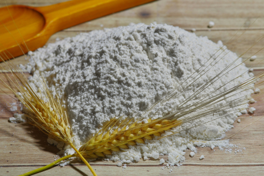
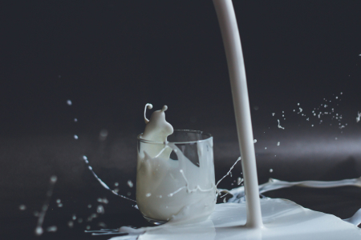
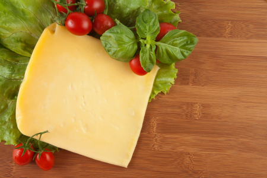
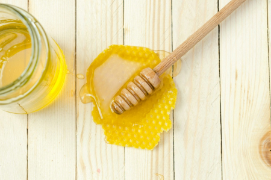
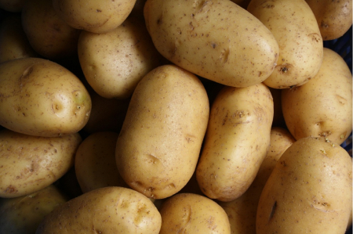
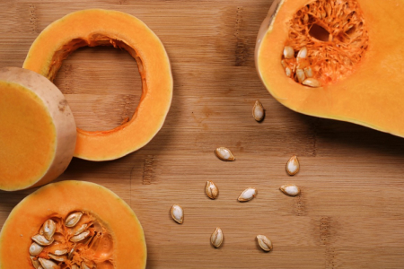

home > 브랜드 스토리 > 재료소개
재료소개
맛을 더하는 자연재료
뚜레쥬르는 빵의 기본이 되는 밀가루로 베이커리 전용 밀가루를 사용합니다.
빵의 맛을 더 풍부하게 하는 우유, 치즈, 채소, 과일 등도 자연의 순수함을 그대로 간직한 재료들을 선별하여 사용합니다.
-

- 베이커리 전용 밀가루
- CJ제일제당 60년 제분기술을 노하우로 집결하여 만든 베이커리 전용 Only One 밀가루를 개발했습니다. 밀가루는 제분의 정도에 따라 입자의 크기, 색감, 단백질의 함량이 달라지며, 그에 따라 제빵한 빵의 식감도 달라집니다. 또한 밀, 원맥을 직접 가열하는 열처리를 통해 바삭함과 촉촉한식감을 느낄 수 있도록 만들었습니다.
- CJ제일제당
- 제분기술
- 열처리 기술
- 패스츄리 전용
- 크라상
- 식빵 전용
- 순수한맛 순우유 식빵
- 쿠키전용
- 프리미엄 쿠키세트
-

- 유기농 우유
- 깨끗하고 건강한 환경에서 만들어 엄격한 기준을 통과한 유기농 우유만을 취급합니다. 전라북도 완주군 이서면 ‘대광목장’은 유기농 사료와 목초로만 키운 젖소에서 원유를 생산하는 유기농 인증을 받은 목장입니다. 화학성분이 첨가되지 않은 사료나 목초만을 먹고 자라 깨끗하고 건강한 유기농 우유를 생산합니다.
- 대광목장
- 전북 완주
- 유기농 사료와 목초를 먹는 젖소
- 유기농 원유
- 세 번째로 많이 들어가는 재료
- 순우유 시리즈
- 케이크속에 순우유
-

- 순수한 자연치즈
- 빵의 맛을 한층 높여주는 가장 치즈다운 치즈를 찾아, 집유한 원유에 발효의 건강함이 살아있는 자연치즈로 선택하였습니다. 원유 또는 유가공품에 우유를 고형화하기 위한 최소화한 유산균, 단백질 응유효소, 유기산 등만 첨가하여 제조한 치즈로, 원유의 영양과 발효의 건강함이 그대로 살아있습니다.
- 자연치즈
- 우유 고형화 요소 최소화
- 원유가공
- 고단백
- 고칼슘
- 순치즈제품
- 자연치즈로 만든 빵속에 순치즈
-

- 건강한 아카시아 벌꿀
- 빵이 주는 첫번째 행복은 달콤함, 뚜레쥬르는 그 달콤함도 건강을 생각했습니다. 강원의 건강한 꿀벌이 8,000송이 아카시아 꽃을 찾아 40km를 날아 모은 귀한 햇꿀입니다. 벌꿀은 단당류로 인체에 바로 흡수 되어 피로회복은 물론, 철분, 나이아신, 칼륨 등의 성분이 들어있어 체내 에너지 생성에 필요한 전해질 균형에 도움을 줍니다
- 강원 꿀벌
- 아카시아
- 가을 햇꿀
- 건강한 달콤함
- 순꿀 치즈케이크
- 순꿀 바게트
-

- 땅끝해남 순감자
- 봄이 조금 일찍 찾아 든다는 남쪽마을 해남, 싱그러운 햇살과 힘찬 해풍이 더해진 비옥한 황토땅의 힘찬 생명력이 길러내 더욱 단단하고 맛 좋은 감자입니다. 다른 음식과 달리 조리해도 비타민 C가 파괴되지 않아 중요한 비타민의 공급원이 되어 줍니다. 또한 알칼리성으로 산성인 우리 몸을 중화시켜주며, 나트륨 배출 등의 효과가 있습니다.
- 땅끝마을
- 전남 해남
- 봄에 나는 자연 에너지
- 순감자 시리즈
- 빵속에 순감자
- 순감자 포카치아
-

- 건강한 땅콩호박
- 뚜레쥬르의 땅콩호박은 최고 청정지역 봉화에서 왔습니다. 그곳에 위치한 약 6만㎡규모의 ‘해오름 농장’은 특급호텔 셰프 출신 최종섭님께서 다양한 식재를 한국인의 밥상에 올리고자 만든 희귀식재 전문 농장입니다. 단호박에 비해 칼로리가 낮고 비타민A와 섬유질이 풍부하며 베타카로틴, 비타민, 단백질이 가득해 더욱 건강합니다.
- 해오름 농장
- 경북 봉화
- 청정지역
- 셰프가 고른 깐깐한 재료
- 순땅콩호박 시리즈
- 순땅콩호박비스킷브레드